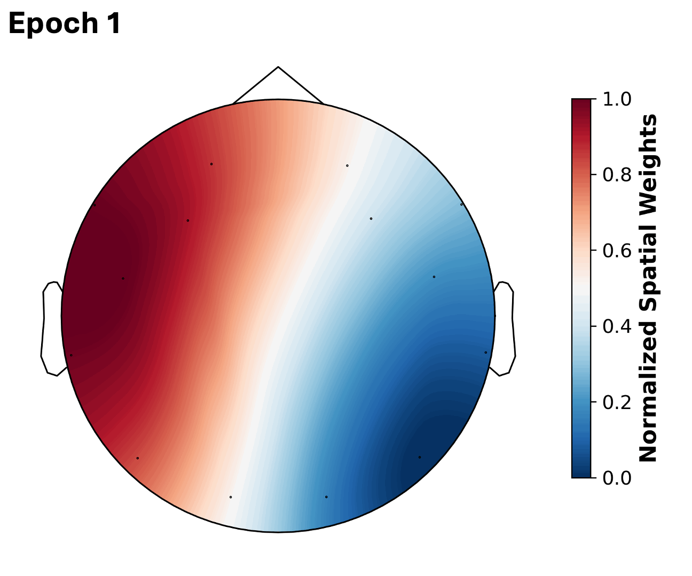

GPU memory2,695 MB
Measured: 207 MB at 200; 1,438 MB at 2,000 steps.
Long EEG. Any headset. One model.
Learn from long EEG across different headsets.
01 / playground
Move a slider. The visual updates beside it.
Compared with the tested 120 s setting.
Illustration only. Move “Differential heads” to change noise amplitude; the underlying EEG stays fixed.
Measured: 207 MB at 200; 1,438 MB at 2,000 steps.
Measured: 0.28 ms at 200; 0.38 ms at 2,000 steps.
Solid lines use reported measurements. Dashed lines extend the trend; they are not new benchmarks. Paper ↗
02 / the model
Tap a step.
Self-supervision
Hide part of the signal, then rebuild it.
Learn the larger pattern.
03 / spatial mapping
3D coordinates map each headset into the same space.
Peak: Fp1 · 36.1%
Coordinate-distance proxyIllustrative W column
Simulation only · no checkpoint weights · repository coordinates; MN8 is schematic.
Real coordinatesOpen montage files↗04 / results
Pick a task to see where it focuses.

Focuses on frontal signals linked to eye closure.
Hong, J., Mackellar, G., & Ghane, S. (2026). SAMBA: Toward an EEG Foundation Model via Differential Mamba and Coordinate-Driven Spatial Embedding. NeurReps 2026 Proceedings Track.